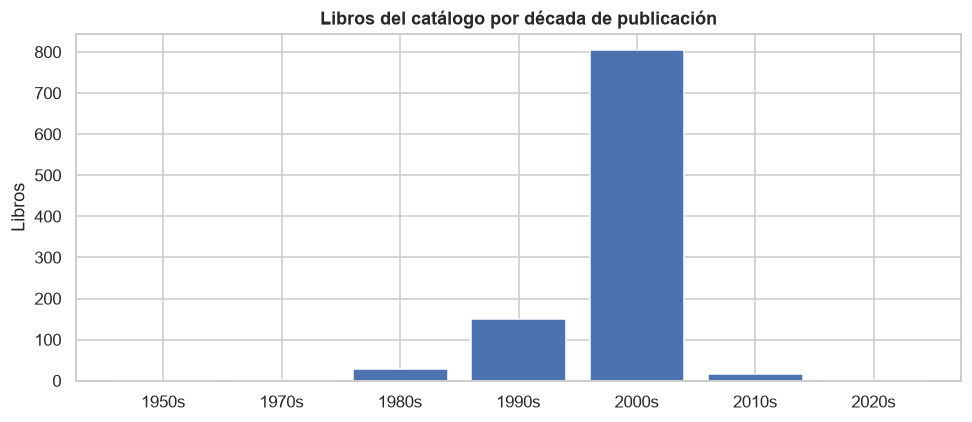
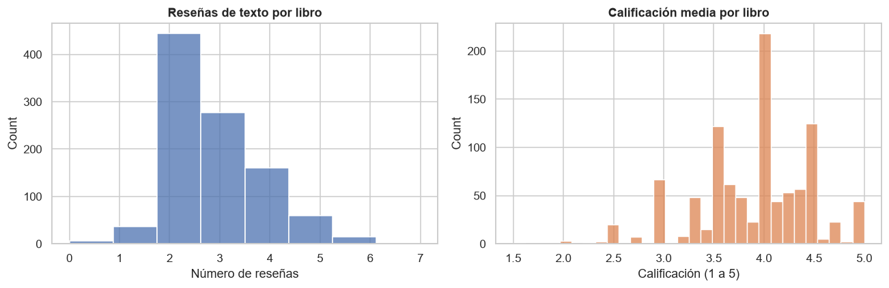
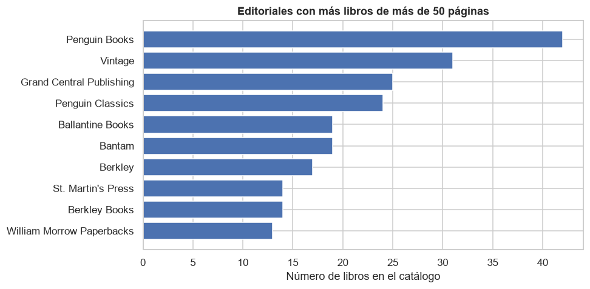

SQL — Servicio de Libros
Cinco preguntas de negocio resueltas exclusivamente con SQL sobre la base de datos de un servicio de libros, para fundamentar la propuesta de valor de un nuevo producto.
Resumen ejecutivo
Un servicio de libros pidió estudiar el contenido de su base de datos (libros, editoriales, autores, calificaciones y reseñas) para fundamentar la propuesta de valor de un nuevo producto. Todo el análisis se resuelve con SQL puro sobre PostgreSQL: pandas se usa únicamente para ejecutar las consultas y mostrar resultados, nunca para agregar o filtrar datos que la base pueda resolver. El resultado es una propuesta de valor concreta: el mercado no carece de libros, carece de criterio para elegirlos.
Contexto / Problema
La pandemia desplazó tiempo libre hacia la lectura en casa, atrayendo a startups que compiten por desarrollar la mejor aplicación para amantes de los libros. Antes de diseñar cualquier funcionalidad de recomendación o descubrimiento, hace falta entender qué tan denso es realmente el catálogo en calificaciones y reseñas — la materia prima de cualquier sistema de recomendación.
Datos
| Característica | Detalle |
|---|---|
| Fuente | Base de datos PostgreSQL remota del curso TripleTen |
| Tablas | books, authors, publishers, ratings, reviews |
| Volumen | 1 000 libros · 636 autores · 340 editoriales · 6 456 calificaciones · 2 793 reseñas |
| Acceso | Consulta directa vía SQLAlchemy + SSL, sin CSVs crudos |
Herramientas y tecnologías
Base de datos
Visualización
Datos y entorno
Metodología / Proceso
Verificación de calidad
Comprobación de valores ausentes en claves, referencias rotas entre tablas y calificaciones fuera de escala, antes de responder cualquier pregunta.
Antigüedad del catálogo
¿Cuántos libros se publicaron después del 1 de enero de 2000?
Densidad de reseñas y calificación
¿Cuántas reseñas y qué calificación promedio tiene cada libro? Se agrega cada tabla por separado para evitar el producto cartesiano al combinarlas.
Concentración editorial
¿Qué editorial publicó más libros de más de 50 páginas?
Autor mejor valorado
¿Qué autor tiene la calificación promedio más alta, considerando solo libros con al menos 50 calificaciones?
Núcleo de usuarios activos
¿Cuántas reseñas escriben, en promedio, los usuarios que calificaron más de 50 libros?
Mi rol y contribución
- Resolví las cinco preguntas de negocio exclusivamente con SQL (CTEs, joins, agregaciones condicionales con
FILTER), usando pandas solo para mostrar resultados ya calculados por la base. - Evité el error clásico de unir
ratingsyreviewsdirectamente en una sola consulta, que multiplicaría las filas por producto cartesiano; agregué cada tabla por separado en subconsultas antes de combinarlas. - Verifiqué la integridad de las cinco tablas (claves foráneas, rangos de calificación) antes de responder cualquier pregunta de negocio, confirmando que no hacían falta decisiones de limpieza.
- Traduje los cinco resultados SQL en una propuesta de valor de producto con tres líneas de acción concretas, no solo en una tabla de cifras.
- Saneé las credenciales de conexión a la base de datos del curso, moviéndolas de estar hardcodeadas en el notebook a variables de entorno no versionadas.
Resultados e insights
| Análisis | Hallazgo |
|---|---|
| Antigüedad del catálogo | 819 de 1 000 libros (82%) se publicaron después del 1 de enero de 2000 — catálogo contemporáneo, no un fondo histórico |
| Densidad de calificaciones | Solo 19 de 1 000 libros superan las 50 valoraciones; un ranking por nota media sería casi plano |
| Densidad de reseñas | Ningún libro pasa de una decena de reseñas escritas; la reseña es el activo escaso, no la calificación |
| Núcleo de usuarios | 6 usuarios concentran una actividad de reseña muy superior al resto (24,3 reseñas de media vs. 17,2) |
| Concentración editorial | Penguin Books encabeza el catálogo con 42 libros, seguida de Vintage y Grand Central Publishing |

El catálogo es contemporáneo: la mayoría de los libros se publicó en la década de 2000

La reseña escrita es escasa; la calificación media se concentra en la parte alta de la escala

Penguin Books y sus sellos concentran la mayor parte del catálogo editorial
Conclusiones
El problema del mercado no es la falta de libros, sino la falta de criterio para elegirlos. El catálogo es amplio y actual, pero casi no genera opinión utilizable: pocas reseñas, notas uniformemente altas y una comunidad activa diminuta. Tres líneas de acción se desprenden directamente del análisis: convertir la reseña en el eje del producto en vez de un extra opcional, cultivar y dar visibilidad al núcleo mínimo de usuarios muy activos, y recomendar por afinidad entre lectores en lugar de por nota media — con la dependencia del grupo editorial Penguin como riesgo a vigilar en cualquier negociación de contenidos.